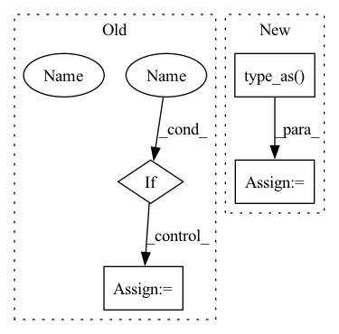

Pattern ID :26977
Before Change
// 当图片中不存在真实框的时候，所有特征点均为负样本
//-------------------------------------------------------//
alpha_factor = torch.ones_like(classification) * alpha
if cuda :
alpha_factor = alpha_factor.cuda()
alpha_factor = 1. - alpha_factor
focal_weight = classification
focal_weight = alpha_factor * torch.pow(focal_weight, gamma)After Change
// 当图片中不存在真实框的时候，所有特征点均为负样本
//-------------------------------------------------------//
alpha_factor = torch.ones_like(classification) * alpha
alpha_factor = alpha_factor.type_as( classification)
alpha_factor = 1. - alpha_factor
focal_weight = classification
focal_weight = alpha_factor * torch.pow(focal_weight, gamma)In pattern: SUPERPATTERN
Frequency: 3
Non-data size: 4
Instances Fragment ID: 80358942
Project Name: bubbliiiing/efficientdet-pytorch
Commit Name: 6ddbe5b42ac0d8cbc3a0555f31d6f10f91a039b3
Time: 2022-04-17
Author: 3323290568@qq.com
File Name: nets/efficientdet_training.py
M Class Name: FocalLoss
N Class Name: FocalLoss
M Method Name: forward(8)
N Method Name: forward(8)
M Parent Class: nn.Module
N Parent Class: nn.Module
M File Name: nets/efficientdet_training.py
N File Name: nets/efficientdet_training.py
M Start Line: 120
M End Line: 232
N Start Line: 139
N End Line: 220
Before Change
num_entities: Optional[int] = None,
) -> torch.FloatTensor: // noqa: D102
// Sanity check
if label_smoothing :
raise UnsupportedLabelSmoothingError(self)
// determine positive; do not check with == since the labels are floats
pos_mask = labels > 0.5
// get indices of positives, shape: (nnz, ndim)
batch_ind = pos_mask.nonzero()[:, 0]
// select rows of negatives
negative_scores = predictions[batch_ind]
// select positive scores
positive_scores = predictions[pos_mask]
return self(pos_scores=positive_scores, neg_scores=negative_scores)
// docstr-coverage: inheritedAfter Change
// determine positive; do not check with == since the labels are floats
pos_mask = labels > 0.5
// subtract margin from positive scores
predictions = predictions - pos_mask.type_as( predictions) * self.margin
// divide by temperature
predictions = predictions / self.inverse_softmax_temperature
return super().process_lcwa_scores( Fragment ID: 80358943
Project Name: pykeen/pykeen
Commit Name: d7ee986026065997398ab72152f0365224d9e374
Time: 2022-05-17
Author: berrendorf@dbs.ifi.lmu.de
File Name: src/pykeen/losses.py
M Class Name: InfoNCELoss
N Class Name: InfoNCELoss
M Method Name: process_lcwa_scores(5)
N Method Name: process_lcwa_scores(5)
M Parent Class: CrossEntropyLoss
N Parent Class: SetwiseLoss
M File Name: src/pykeen/losses.py
N File Name: src/pykeen/losses.py
M Start Line: 1358
M End Line: 1368
N Start Line: 1235
N End Line: 1245
Before Change
// 当图片中不存在真实框的时候，所有特征点均为负样本
//-------------------------------------------------------//
alpha_factor = torch.ones_like(classification) * alpha
if cuda :
alpha_factor = alpha_factor.cuda()
alpha_factor = 1. - alpha_factor
focal_weight = classification
focal_weight = alpha_factor * torch.pow(focal_weight, gamma)After Change
// 当图片中不存在真实框的时候，所有特征点均为负样本
//-------------------------------------------------------//
alpha_factor = torch.ones_like(classification) * alpha
alpha_factor = alpha_factor.type_as( classification)
alpha_factor = 1. - alpha_factor
focal_weight = classification
focal_weight = alpha_factor * torch.pow(focal_weight, gamma) Fragment ID: 80358947
Project Name: bubbliiiing/retinanet-pytorch
Commit Name: 38a6ae1801d6402c1b439fe0f96c8d531d884aad
Time: 2022-04-17
Author: 3323290568@qq.com
File Name: nets/retinanet_training.py
M Class Name: FocalLoss
N Class Name: FocalLoss
M Method Name: forward(8)
N Method Name: forward(8)
M Parent Class: nn.Module
N Parent Class: nn.Module
M File Name: nets/retinanet_training.py
N File Name: nets/retinanet_training.py
M Start Line: 119
M End Line: 231
N Start Line: 139
N End Line: 220